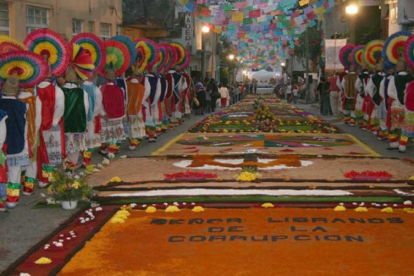

Feria de las Flores
Desde 1938 anualmente se celebra la Feria de las Flores, aunque desde años anteriores se organizaban exposiciones de flores en casas particulares, que se turnaban año con año. Los festejos duran nueve días e inician En la víspera del primer Domingo de cuaresma en honor al Santo Patrono de Huauchinango El Señor Jesús en su Santo Entierro.
Esta celebración ha evolucionado con el paso de los años, inicialmente fue una fiesta provinciana en la que se organizaban bailes, peleas de gallos, charreadas, desfiles de carros alegóricos, el certamen de “La India Bonita” (Xochiquetzalli), alfombras florales y procesiones con la imagen del Santo Patrono, de cada una de las colonias ,barrios y algunas comunidades; Que arreglan calles,capillas desde las entradas de cada colonia dandole la bienvenida y acompañándolo su recorrido asta llegar de nuevo a su altar Esto dura los nueve días de la celebración. En este marco se exhiben variedades de azaleas, plantas y flores de ornato, artesanías regionales, productos alimenticios de la región envasados artesanalmente, actúan grupos de danza moderna y de danzas tradicionales como la de “Los Acatlaxques”, "Los Abanicos", “Los Charros”, “Los Chinelos” y "Los Voladores", entre otras. También le imprimen un mayor colorido, los juegos pirotécnicos, el teatro del pueblo, los tríos y los torneos deportivos, etc.
El [carnaval] de huauchinango que se celebra cuatro días antes de el miércoles de ceniza, que se celebra con los huehes que en nahuetl significa "viejo" que salen durante cuatro días, comparzas de cada colonia a bailar por las calles anterior mente se ocupaba musica tradicional con intrumentos como la guitarra, el violín y la jarana actual mente ocupan musica de banda, al igual los trajes que ocupaban era ropa que tenian en casa de mujer para asimilarla ya que en si eran hombres los que salían. Hoy en dia son trajes coloridos y se realisa un desfile de todas las comparzas y finalisa el carnaval el día martes con la famosa descabezada.
Una de las ceremonias relevantes es la coronación de la [Reina de las Flores], generalmente presidida por el Gobernador del Estado, la cual ofrece la oportunidad de observar una gran expresión de la cultura regional. Esta tradición inició en 1942 con la coronación de la Señorita Laura Oropeza, presidida por el mandatario estatal en turno, C. Gonzalo Bautista Sánchez; lo cual motivó que del l° al 8 de marzo de ese año, Huauchinango fuera declarado Capital del Estado.
Actualmente en la feria de las flores podemos observar que se ralizan conciertos con diversos artistas nacionales y locales, que pueden ser asu vez gratuitos en el teatro del pueblo o con algún costo en el palenque. Cabe mencionar que esta feria realizada en honor a nuestro señor en su santo entierro, esta distinguida por la variedad de orquideas de diferentes colores y formas que adornar la urna de el santo patrono del pueblo. La feria de las flores, inicia con un baile de inauguración con artistas de renombre internacional y es ahí donde es presentada la señorita que representara a huauchinango como reina de las flores y asistirá a eventos sociales.
También, se acostumbra sacar al santo y pasearlo por las colonias elegidas y adornanadas, donde también se realiza la limpiesa de pies. Por último se lleva a la feria para que bendiga los juegos y no sucedan tragedias o accidentes, para que todos puedan disfrutar de la tradicional y respetada feria de las flores de Huauchinango.